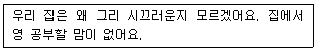
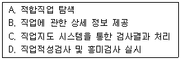
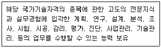
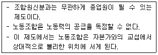
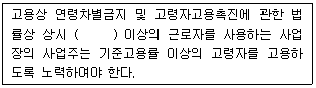

직업상담사-2급 (2010-09-05 기출문제)
1과목: 직업상담학
1. 다음 중 행동주의 상담에서 외적인 행동변화를 촉진시키는 방법은?
- 체계적 둔감법
- 근육이완훈련
- 인지적 모델링과 사고정지
- 상표제도
(정답률: 78%)

2. 낮은 동기를 갖는 내담자의 자기효능감을 증진시키기 위한 방법에 포함되지 않는 것은?
- 내담자의 장점을 강조하며 격려하기
- 긍정적인 단계를 강화하기
- 내담자와 비슷한 인물이나 관련자료 보여주기
- 직업대안 규명하기
(정답률: 83%)
3. 다음 중 상담이론과 그와 관련된 상담기법을 바르게 짝지은 것은?
- 정신분석적 상담 – 인지적 재구성
- 행동치료 – 저항의 해석
- 인지적 상담 – 이완기법
- 형태치료 – 역할연기, 감정에 머무르기, 직면
(정답률: 68%)
4. 직업상담의 중재(Intervention)와 관련된 다음 단계들 중 ‘6개의 생각하는 모자(Six Thing Hats’) 기법은 무엇을 위한 것인가?
- 직업정보의 수집
- 의사결정의 촉진
- 보유기술의 파악
- 시간관의 개선
(정답률: 86%)
5. 마이어스-브릭스의 유형 지표에 관한 설명으로 틀린 것은?
- 자기보고식의 강제선택 검사이다.
- 판단형과 지각형의 성격 차원은 지각적 또는 정보수집적 과정과 관계가 있다.
- 외향형과 내향형의 성격 차원은 세상에 대한 일반적인 태도와 관계가 있다.
- 내담자가 선호하는 작업 역할, 기능, 환경을 찾아내는 데 유용하다.
(정답률: 41%)
6. 다음 중 생애진로사정(Life Career Assessment)에 관한 설명으로 옳은 것은?
- 직업상담에서 생애진로사정은 초기단계보다는 중 · 말기 단계 면접법으로 사용된다.
- 생애진로사정은 Adler의 개인심리학에 기초를 둔다.
- 가계도(Genogram)는 원래 행동주의 심리치료 기법이다.
- 생애진로사정에서는 여가생활, 친구관계 등과 같이 일(Work)과 직접적으로 관련이 없는 주제는 제외된다.
(정답률: 82%)
7. 다음 내담자와 상담자의 대화 중 내담자가 범하고 있는 한계의 오류와 이에 대한 상담자의 개입이라 볼 수 있는 것은?
- “나는 사장님께 말을 할 수 없어요.” - “사장님과 대화할 수 있는 방법을 모르시는 것이겠지요”
- “우리 상사는 나와 일하는 것을 불편하게 생각해요.” - “그 사실을 어떻게 그렇게 잘 알지요?”
- “그 사람들은 나를 이해하지 못해요.” - “누가 당신을 이해하지 못한다는 거지요?”
- “우리 상관은 나를 무시하려 들지요.” - “당신의 상관께서 특별히 어떤 점에서 무시한다는 생각이 드나요?”
(정답률: 51%)
8. 다음에 대해 가장 수준이 높은 공감적 이해와 관련된 반응은?

- 시끄러워도 좀 참고 하지 그러니
- 그래, 집이 시끄러우니까 공부하는 데 많이 힘들지?
- 식구들이 좀 더 조용히 해주면 공부를 더 잘할 수 있을 것 같단 말이지?
- 공부하기 싫으니까 핑계도 많구나.
(정답률: 75%)
9. 상담자의 윤리강령으로 맞지 않는 내용은?
- 상담자는 상담활동의 과정에서 소속기관 및 비전문인과 갈등이 있을 때 내담자의 복지를 우선적으로 고려한다.
- 상담자는 타 전문인과 상호 합의가 없었지만 내담자가 간절히 원하면 타 전문인으로부터 도움을 받고 있는 내담자라도 카운슬링한다.
- 상담자 자신의 개인 문제 및 능력의 한계 때문에 도움이 주지 못하리라고 판단될 경우는 다른 전무가 동료 및 관련기관에 의뢰한다.
- 상담자는 사회공익과 자기가 종사하는 전문직의 바람직한 이익을 위하여 최선을 다한다.
(정답률: 79%)
10. 다음 중 실업자의 비합리적 신념체계를 논박하고 자신이 무가치한 존재가 아니라는 것을 일깨워 주며, 자신에 대한 긍정적인 태도와 감정을 갖게 만드는 상담기법은?
- 합리적 · 정서적 상담
- 특성 – 요인적 상담
- 정신역동적 상담
- 내담자 중심적 상담
(정답률: 77%)
11. 다음 중 실존주의 상담에 관한 설명으로 옳은 것은?
- 인간은 과거와 환경에 의해 결정되는 것이 아니라 현재의 사고, 감정, 느낌, 행동의 전체성과 통합을 추구하는 존재이다.
- 인간은 자신의 삶 속에서 스스로를 불행하게 만드는 요인이 무엇인가를 이해할 수 있을 뿐만 아니라 자신의 나아갈 방향을 찾고 건설적인 변화를 이끌 수 있다.
- 상담목표는 치료가 아니라 내담자로 하여금 자신의 현재 상태에 대해 인식하고 피해자적 역할로부터 벗어날 수 있도록 돕는 것이다.
- 과거 사건에 대한 개인의 지각과 해석이 현재의 행동에 어떠한 영향을 미치는가에 중점을 두고 개인의 선택과 책임, 삶의 의미, 성공추구 등을 강조한다.
(정답률: 64%)
12. 직업상담의 문제 유형 중 Bordin의 분류에 해당하지 않는 것은?
- 의존성
- 확신의 결여
- 선택에 대한 불안
- 흥미와 적성의 모순
(정답률: 74%)
13. 다음 중 내담자중심 상담이론의 특징이 아닌 것은?
- 동일한 상담원리를 정상적 상태에 있는 사람이나 정신적으로 부적응상태에 있는 사람 모두에게 적용한다.
- 상담은 모든 건설적인 대인관계의 실 사례 중 단지 하나에 불가하다.
- 실험에 기초한 귀납적인 접근방법이며 실험적 방법을 상담과정에 적용한다.
- 상담의 과정과 그 결과에 대한 연구조사를 통하여 개발되어 왔다.
(정답률: 73%)
14. 다음 중 청소년 직업발달에 영향을 미치는 요인과 가장 거리가 먼 것은?
- 부모의 직업
- 성역할의 사회화
- 진로교사의 직업선택
- 실습기간 동안의 근로 경험
(정답률: 82%)
15. 다음 중 Glasser의 현실요법 상담이론에서 제시한 기본적인 욕구에 해당하지 않는 것은?
- 생존의 욕구
- 힘에 대한 욕구
- 자존의 욕구
- 재미에 대한 욕구
(정답률: 55%)
16. 희망직업 또는 자신의 흥미, 적성에 대한 이해가 부족한 내담자를 상담하게 되었을 때, 상담 및 직업지도 서비스 업무과정을 바르게 나열한 것은?

- D → C → A → B
- A → B → D → C
- D → A → B → C
- A → D → C → B
(정답률: 62%)
17. 다음 중 진로상담의 주요 원리가 아닌 것은?
- 진로상담은 진학과 직업선택에 초점을 맞추어 전개되어야 한다.
- 진로상담은 상담자와 내담자 간의 라포(Rapport)가 형성된 관계 속에서 이루어져야 한다.
- 진로상담은 항상 집단적인 진단과 처치의 자세를 견지한다.
- 진로상담은 상담윤리 강령에 따라 전개되어야 한다.
(정답률: 82%)
18. 직업상담 장면에서 미결정자나 우유부단한 내담자에게 가장 우선되어야 할 직업상담 프로그램은?
- 미래사회 이해 프로그램
- 자신에 대한 탐구 프로그램
- 취업효능감 증진 프로그램
- 직업세계 이해 프로그램
(정답률: 77%)
19. 다음 중 정신역동상담의 주요 기술이 아닌 것은?
- 저항
- 훈습
- 해석
- 선택
(정답률: 63%)
20. 다음 중 특성-요인 상담의 특징으로 틀린 것은?
- 상담자 중심의 상담방법이다.
- 문제의 객관적 이해보다는 내담자에 대한 정서적 이해에 중점을 둔다.
- 내담자에게 정보를 제공하고 학습기술과 사회적 적응 기술을 알려 주는 것을 중요시한다.
- 사례연구를 상담의 중요한 자료로 삼는다.
(정답률: 69%)
2과목: 직업심리학
21. Holland 직업성격이론의 6가지 성격유형에 해당되는 것은?
- 진취적 유형
- 직관적 유형
- 판단적 유형
- 외향적 유형
(정답률: 69%)
22. 다음중 검사의 신뢰도와 타당도에 대한 설명으로 틀린 것은?
- 동일한 사람에게 두 번 실시해서 얻는 점수들의 상관계수는 안정성 계수이다.
- 내적합지도 계수의 크기를 결정짓는 원인은 두 검사 시행 간의 시간 간격이다.
- 검사를 구성하고 있는 문항들이 전체 내용 역역의 문항들을 얼마나 잘 대표하는가에 관한 정도를 나타낸 것이 내용 타당도이다.
- 해당 검사가 이론적 구성개념이나 특성을 측정할 수 있는 정도를 나타낸 것이 구성개념 타당도이다.
(정답률: 52%)
23. 직무 스트레스에 대한 설명으로 틀린 것은?
- 직장 내 소음, 온도와 같은 물리적 요인이 직무 스트레스를 유발할 수 있다.
- 직무 스트레스를 일으키는 심리사회적 요인으로 역할 갈등, 역할 과부하, 역할 모호성 등이 있다.
- 사회적 지지가 제공되면 우울이나 불안 같은 직무 스트레스 반응이 감소한다.
- A유형 성격과 B유형 성격을 가진 사람은 직무 스트레스에 취약하다.
(정답률: 71%)
24. 다음 중 개인의 특성과 직업세계의 특징과의 최적의 조화(Person-Environment Fit)를 가장 강조한 이론은?
- 수퍼의 생애주기 이론
- 홀랜드의 이론
- 베츠의 자기효능감 이론
- 사회적 인지학습이론
(정답률: 57%)
25. 다음 중 경력개발프로그램의 하나인 종업원 개발 프로그램에 해당되지 않는 것은?
- 훈련 프로그램
- 평가 프로그램
- 후견인 프로그램
- 직무순환
(정답률: 67%)
26. 다음 중 적성검사에 관한 설명으로 틀린 것은?
- 적성검사는 지능검사에 비하면 훨씬 더 후천적이고 획득적인 능력을 측정하는 검사라고 할 수 있다.
- 적성검사는 어떤 분야에서 이미 획득, 사용하고 있는 능력의 현재 수준을 측정하는 것이다.
- 적성검사는 지능검사와 인자 분석법이 합쳐 낳은 일종의 부산물이다.
- 지능검사는 일반 능력검사, 적성검사는 특수능력 검사라고 할 수 있다.
(정답률: 41%)
27. 다음 중 긴즈버그의 진로발달단계를 바르게 나열한 것은?
- 놀이지향기 → 탐색기 → 흥미기
- 환상기 → 잠정기 → 현실기
- 탐색기 → 구체화기 → 특수화기
- 흥미기 → 전환기 → 가치기
(정답률: 80%)
28. 직업적성검사(GATB)에서 사무지각적성(Clerical Perception)을 측정하기 위한 검사는?
- 표식검사
- 계수검사
- 명칭비교검사
- 평면도판단검사
(정답률: 66%)
29. Tolbert가 제시한 개인의 진로발달에 영향을 주는 요인이 아닌 것은?
- 교육정도(Educational Degree)
- 직업흥미(Occupational Interest)
- 직업전망(Occupational Prospective)
- 가정 · 성별 · 인종(Family · Sex · Race)
(정답률: 69%)
30. 다음 중 직무 스트레스의 결과가 조직에 미치는 영향과 가장 거리가 먼 것은?
- 직무수행 감소
- 직무 불만족
- 상사의 부당한 지시
- 결근 및 이직
(정답률: 78%)
31. 직장상사에게 야단맞은 사람이 부하직원이나 식구들에게 트집을 잡아 화풀이를 하는 것은 스트레스에 대한 방어적 대처 중 어떤 개념과 가장 일치하는가?
- 합리화(Rationalization)
- 동일시(Identification)
- 보상(Compensation)
- 전위(Displacement)
(정답률: 74%)
32. 다음 중 참고자료가 충분하고 단기간에 관찰이 불가능한 직무에 적합한 직무분석 방법은?
- 최초분석법
- 데이컴법
- 그룹토의법
- 비교확인법
(정답률: 59%)
33. 직업선택과정에 대한 설명으로 옳은 것은?
- 직업에 대한 정확한 정보만 가지고 있으면 직업을 효과적으로 선택할 수 있다.
- 주로 성년기에 이루어지기 때문에 어릴 때 경험은 영향력이 없다.
- 개인적인 문제이기 때문에 가족이나 환경의 영향은 관련이 없다.
- 일생동안 계속 이루어지는 과정이기 때문에 다양한 시기에서 도움이 필요하다.
(정답률: 78%)
34. 다음 중 표준편차에 대한 설명으로 옳은 것은?
- 최저점과 최고점의 점수 차
- 최빈치와 최소치 간의 점수 차의 평균
- 각 점수들이 평균에서 벗어난 평균면적
- 평균치에서 각 수치들이 평균적으로 이탈된 정도
(정답률: 62%)
35. 다음 중 금전적 보상이 직무동기를 낮출수도 있음을 설명해주는 이론은?
- 기대이론
- 내재적 동기이론
- 강화이론
- 목표 설정이론
(정답률: 62%)
36. Bandura의 사회인지적 진로발달이론에 대한 설명으로 틀린 것은?
- 직업행동을 이해하는 데 흥미를 중요하게 다룬다.
- 개인, 환경, 외형적 행동 간에 상호작용을 강조한다.
- 성과기대나 개인목표와 같은 인지적 과정을 주로 다룬다.
- 자기 효능감을 진로발달의 중요한 개인적 결정요인으로 가정한다.
(정답률: 48%)
37. 다음 중 직업흥미검사가 아닌 것은?
- Career Assessment Inventory
- Kuder Preference Record
- Strong Vocational Interest Blank
- Differential Aptitude Test
(정답률: 57%)
38. 다음 중 Maslow의 욕구위계이론과 가장 유사성이 많은 직무동기이론은?
- 이론 – 유인가 이론
- Adams의 형평이론
- Locke의 목표설정이론
- Alderfer의 존재 – 관계- 성장이론
(정답률: 65%)
39. K-WAIS의 언어성 검사에 해당되지 않는 것은?
- 바꿔쓰기
- 숫자 외우기
- 산수문제
- 이해문제
(정답률: 55%)
40. 다음 중 직무분석의 결과가 활용되는 용도와 가장 거리가 먼 것은?
- 신규작업자의 모집
- 종업원의 교육훈련
- 인력수급계획 수립
- 종업원의 사기 조사
(정답률: 72%)
3과목: 직업정보론
41. 워크넷 구인 구직 및 취업동향에서 사용하는 용어에 대한 설명으로 틀린 것은?
- 휘망임금충족률 : (제시임금÷희망임금)X100
- 취업건수 : 금월 기간에 워크넷에 취업 등록된 수
- 시간제 : 그 사업장에서 근무하는 통산상의 근로자보다 짧은 시간을 근로하게 하는 고용
- 상용직 : 고용계약기간이 1개월 미만인 경우 또는 매일 매일 고용되어 근로의 대가로 일급 또는 일당제 급여를 받고 근로하는 고용
(정답률: 59%)
42. Andrus가 제시한 정보의 효용에 해당되지 않는 것은?
- 장소효용
- 형태효용
- 시간효용
- 통제효용
(정답률: 59%)
43. 한국직업전망에 관한 설명으로 틀린 것은?
- 진로와 직업을 결정하고자 하는 청소년 및 일반 구직자에게 다양한 직업정보를 제공하여 직업선택에 도움을 주고자 기획되었으며, 우리나라를 대표하는 17개 분야 약 200개 직업에 대한 상세정보를 수록하고 있다.
- 하는 일, 근무환경, 교육/훈련/자격, 필요한 적성과 흥미 및 향후 3년간 수록작업에 대한 전망을 제공함으로써 각 직업에 대한 상세한 정보를 얻을 수 있도록 구성되었다.
- 수록직업은 한국고용직업분류(KECO)에 기초하여 종사자 수가 일정 규모 이상이거나 청소년 및 일반 구직자로부터 높은 관심을 받는 직업 혹은 직업정보를 제공할 가치가 있다고 판단되는 직업을 우선으로 선정하였다.
- 한국고용직업분류(KECO)의 세분류 직업 429개 중 승진이나 경력개발을 통해 진입하는 관리직은 제외하였다.
(정답률: 52%)
44. 한국직업사전을 발간하기 위해 주로 사용하는 직무조사 실시 방법은?
- 직업전문가 자문조사
- 설문지 조사
- 현직 종사자 직무관찰 및 면접
- 동영상 촬영
(정답률: 50%)
45. 다음은 국가기술자격 중 어떤 등급의 검정기준인가?

- 기술사
- 기능장
- 기사
- 산업기사
(정답률: 65%)
46. 한국표준산업분류(2008)의 산업분류 적용원칙에 대한 설명으로 틀린 것은?
- 생산단위는 투입물과 생산공정을 제외한 산출물을 고려하여 그들의 활동을 가장 정확하게 설명된 항목에 분류해야 한다.
- 복합적인 활동단위는 우선적으로 최상급 분류단계를 정확히 결정하고 순차적으로 중, 소, 세, 세세분류 단계 항목을 결정하여야 한다.
- 산업활동이 결합되어 있는 경우에는 그 활동단위의 주된 활동에 따라서 분류하여야 한다.
- 수수료 또는 계약에 의하여 활동을 수행하는 단위는 자기계정과 자기책임하에서 생산하는 단위와 동일 항목에 분류되어야 한다.
(정답률: 61%)
47. 다음 고용안정사업 중 고용조정지원에 해당하지 않는 것은?(법률 개정전 내용으로 기존 정답은 4번입니다. 여기서는 4번을 누르면 정답 처리 됩니다.)
- 고용유지지원금
- 전직지원장려금
- 재고용장려금
- 교대제전환지원금
(정답률: 72%)
48. 직업정보 분석 시의 유의점으로 틀린 것은?
- 전문적인 시각에서 분석한다.
- 직업정보원과 제공원에 대하여 제시한다.
- 동일한 정보는 한 가지 측면으로 분석하여 단일해석 한다.
- 분석은 원자료의 생산일, 자료표집방법, 대상, 자료의 양 등을 검토한다.
(정답률: 76%)
49. 한국표준직업분류(2007)의 대분류 항목과 직능수준과의 관계가 바르게 짝지어진 것은?
- 전문가 및 관련 종사자 – 제4직능수준 혹은 제3직능수준 필요
- 사무 종사자 – 제3직능수준 필요
- 단순노무 종사자 – 제2직능수준 필요
- 군인 – 제1직능수준 필요
(정답률: 67%)
50. 광학기사, 기상기사, 생물공학기사 국가기술종목이 공통으로 해당되는 직무분야는?(법률 개정전 내용으로 기존 정답은 4번입니다. 여기서는 4번을 누르면 정답 처리 됩니다.)
- 기계분야
- 안전관리분야
- 해양분야
- 산업응용분야
(정답률: 74%)
51. 통계청에서 실시하는 경제활동인구조사에 관한 설명으로 틀린 것은?
- 국민의 경제활동을 조사하여 거시경제 분석에 필요한 기초 자료를 제공한다.
- 현역군인 및 사회복무요원, 형이 확정된 교도소 수감자, 의무경찰은 조사대상에서 제외한다.
- 표본조사구 약 32,000가구 내에 상주하는 만 15세 이상인 자를 조사대상으로 한다.
- 매월 25일이 포함된 1주간(일요일~토요일)을 조사대상 주간으로 한다.
(정답률: 60%)
52. 한국직업사전의 직업명세 중 자료(Data)와 관련된 직무기능에 관한 설명으로 틀린 것은?
- 종합 – 사실을 발견하고 지식개념 또는 해석을 개발하기 위해 자료를 종합적으로 분석한다.
- 조정 – 데이터의 분석에 기초하여 시간, 장소, 작업순서, 활동 등을 결정한다.
- 계산 – 수를 세거나 사칙연산을 실시하고 사직연산과 관련하여 규정된 활동을 수행하거나 보고한다.
- 수집 – 자료, 사람, 사물에 관한 정보를 수집 · 대조 · 분류 한다.
(정답률: 61%)
53. 한국산업분류(2008)에서 통계단위의 산업결정방법에 대한 설명으로 틀린 것은?
- 생산단위의 산업활동은 그 생산단위가 수행하는 주된 산업활동의 종류에 따라 결정된다.
- 단일사업체의 보조단위는 그 사업체의 일개 부서로 포함한다.
- 계절에 따라 정기적으로 산업을 달리하는 사업체의 경우에는 조사시점에 경영하는 사업으로 분류된다.
- 휴업 중 또는 자산을 청산 중인 사업체의 산업은 영업 중 또는 청산을 시작하기 전의 산업활동에 의하여 결정한다.
(정답률: 71%)
54. 워크넷에 수록되어 있지 않은 외국 직업전망서는?(법률 개정전 내용으로 기존 정답은 3번입니다. 여기서는 3번을 누르면 정답 처리 됩니다.)
- 미국전망서
- 일본전망서
- 영국전망서
- 캐나다전망서
(정답률: 72%)
55. 직업정보를 정보의 생산 및 운영 주체에 따라 민간직업정보와 공공직업정보로 구분할 때 공공직업정보의 특성이 아닌 것은?
- 전체 산업 및 업종에 걸친 직종을 대상으로 한다.
- 조사 분석 및 정리, 제공에 상당한 시간 및 비용이 소요되므로 유료제공의 원칙이 적용된다.
- 지속적으로 조사 · 분석하여 제공되며 장기적인 계획 및 목표에 따라 정보체계의 개선작업 수행이 가능하다.
- 직업별로 특정한 정보만을 강조하지 않고 보편적인 항목으로 이루어진 기초적인 직업정보체계로 구성된다.
(정답률: 75%)
56. 한국직업정보시스템에서 제공하는 학과정보 중 의약계열에 해당하지 않는 것은?
- 의료공학과
- 치기공과
- 생명과학과
- 응급구조과
(정답률: 66%)
57. 국가기술자격 서비스분야의 소비자전문상담사 1급의 응시자격으로 틀린 것은?(오류 신고가 접수된 문제입니다. 반드시 정답과 해설을 확인하시기 바랍니다.)
- 해당 종목의 2급 자격 취득 후 소비자상담 실무경력이 2년 이상인 사람
- 소비자상담 관련 실무경력이 5년 이상인 사람
- 대학졸업자 등으로 졸업 후 응시하고자 하는 종목이 속하는 동일 직무분야에서 3년 이상 종사한 사람
- 외국에서 동일한 종목에 해당하는 자격을 취득한 사람
(정답률: 22%)
58. 다음 중 한국직업사전에서 알 수 없는 자료는?
- 해당 직업이 주로 존재하는 산업명, 해당 직무를 수행하는데 필요한 일반적인 지식 정도
- 유사직업명, 작업장소의 환경과 제약조건
- 수행하는 직무기술, 수행하는 작업에 필요한 힘의 강도 및 신체적 제반동작
- 노동시간, 해당 직무를 수행하는 데 필요한 직무지식
(정답률: 50%)
59. 한국표준직업분류(2007)에서 포괄적인 업무에 대해 적용하는 직업분류 원칙을 순서대로 바르게 나열한 것은?
- 주된 직무 → 최상급 직능수준 → 생산업무
- 최상급 직능수준 → 주된 직무 → 생산업무
- 최상급 직능수준 → 생산업무 → 주된 직무
- 생산업무 → 최상급 직능수준 → 주된 직무
(정답률: 64%)
60. 한국직업사전(2010)의 부가 직업정보 중 ‘수준 5’에 해당하는 숙련기간은?(법률 개정전 내용으로 기존 정답은 3번입니다. 여기서는 3번을 누르면 정답 처리 됩니다.)
- 시범 후 30일 이하
- 3개월 초과 ~ 6개월 이하
- 1년 초과 ~2년 이하
- 4년 초과 ~ 10년 이하
(정답률: 73%)
4과목: 노동시장론
61. 다음 중 노동수요가 상대적으로 탄력적인 경우는?
- 기업이 이윤을 극대화하는 경우
- 기업의 생산비용 중 노동비용이 증가하는 경우
- 노동 이외의 생산요소의 공급곡선이 비탄력적인 경우
- 노동의 공급곡선이 수직인 경우
(정답률: 49%)
62. 인적자본이론에서 연령이 적은 근로자일수록 이동경향이 높게 나타나는 이유와 가장 거리가 먼 것은?
- 연령이 적을수록 위험선호형이기 때문이다.
- 연령이 적을수록 새로운 직장에서 받는 임금이 높을 가능성이 크기 때문이다.
- 연령이 적을수록 새로운 직장에서 임금을 회수할 기간이 길기 때문이다.
- 연력이 적을수록 이동비용이 적기 때문이다.
(정답률: 47%)
63. 힉스의 노동쟁의 분석모형에 따를 때, 파업이 발생하지 않는 경우는?
- 장래의 교섭력을 높일 필요가 있을 때
- 노동자의 저항곡선이 사용자의 양보곡선보다 위에 위치할 때
- 정보의 불확실성으로 상대방의 곡선을 모를 때
- 노동조합의 저항곡선과 사용자의 양보곡선이 만날 때
(정답률: 61%)
64. 다음 중 비자발적 실업이 아닌 것은?
- 마찰적 실업
- 경기적 실업
- 구조적 실업
- 기술적 실업
(정답률: 52%)
65. 임금-물가 악순환론, 지불능력설, 한계생산력설 등에 영향을 미친 임금결정이론은?
- 임금생존비설
- 임금철칙설
- 노동가치설
- 임금기금설
(정답률: 65%)
66. 다음 중 노동력의 지역간 이동 이론에서 도시공식부문과 비공식부문의 개념을 도입한 것은?
- 농민층분해론
- 루이스(A.Lewis)모형
- 페티(W.Petty) - 클라크(C. C. Clark) 법칙
- 토다로(M. P. Todaro) 모형
(정답률: 41%)
67. 노동조합 조직률 변동의 결정요인에 대한 설명으로 틀린 것은?
- 근로조건 열악 등에서 오는 불만과 분노의 양이 클수록 노조의 집단적 발언효과로 인하여 노조가입의 예상순이익이 증가할 수 있다.
- 노조의 정치활동으로 근로자의 간접임금이 높아질 가능성이 높아지면 예상순이익이 증가하여 노조가입에 대한 수요가 증가할 것이다.
- 여성의 경제적 지위향상에 대한 노조의 관심과 노력이 있으면 전체 노동력에서 여성고용의 비중이 증가함에 따라 노조가입은 증가한다.
- 산업구조가 서비스업 중심으로 바뀜에 따라 화이트칼라의 구성이 높아지면 노조가입은 증가한다.
(정답률: 57%)
68. 분단노동시장(Segmented Labor Market) 가설의 출현배경과 가장 거리가 먼 것은?
- 능력분포와 소득분포의 상이
- 교육개선에 의한 빈곤퇴치 실패
- 소수인종에 대한 현실적 차별
- 동질의 노동에 동일한 임금
(정답률: 67%)
69. 고용수준과 작업시간 간에는 역(逆)관계가 성립한다. 정부가 고용을 늘리기 위해서 초과근로수당을 크게 인상할 경우 일반적으로 실업자의 고용기회가 증대된다고 본다. 이에 대한 반론으로 가장 적합하지 않은 것은?
- 초과근로수당이 인상되면 기업이 점차 노동집약적 기술을 채택하거나, 생산물 가격의 상승으로 생산량과 노동수요가 줄어들 가능성이 있다.
- 기존에 취업된 사람들이 추가로 야간근무를 하여, 실업자에게 새로운 직장이 창출될 가능성이 적다.
- 이 주장은 현재 연장근로를 수행하고 있는 취업자와 실업자의 분포가 같다고 가정한 것이나, 실업자의 기능수준이 낮을 가능성이 높다.
- 할증료를 인상할 경우에도 이를 준수하지 않는 기업이 존재한다.
(정답률: 34%)
70. 경제활동인구조사에서 비경제활동인구로 분류되는 자는?
- 가족단위사업체의 무급가족종사자
- 일시적인 병 등으로 인한 일시휴직자
- 직장이 없는 실업자
- 가사노동을 하는 가정주부
(정답률: 66%)
71. 노동의 한계생산이 3개이고 생산물가격이 1500원, 단위당 임금이 3,000원이면 기업에서 노동의 고용량은?
- 증대할 것이다.
- 감소할 것이다.
- 변동 없다
- 아무 관련이 없다.
(정답률: 66%)
72. 헤도닉 임금이론과 관계있는 것은?
- 생산성 임금
- 보상임금격차
- 생계비임금
- 최저임금
(정답률: 65%)
73. 다음 중 기본급 임금체계의 유형으로 볼 수 없는 것은?
- 연공급
- 부가급
- 직능급
- 직무급
(정답률: 67%)
74. 다음 중 산업민주화 정도가 가장 높은 형태의 기업은?
- 노동자 자주관리 기업
- 노동자 경영참여 기업
- 전문경영인 경영 기업
- 중앙집권적 기업
(정답률: 60%)
75. 다음 중 임금 학설에 관한 설명으로 틀린 것은?
- 임금생존비설은 임금상승이 노동졀약적 기계도입에 따른 기술적 실업의 발생으로 산업예비군을 증가시켜 다시 임금을 생존비수준으로 저하시킨다는 학설이다.
- 임금기금설은 어느 한 시점에 근로자의 임금으로 지불될 수 있는 부의 총액 또는 기금은 정해져 있고, 이 기금은 시간이 지남에 따라 변화될 수 있다는 학설이다.
- 임금교섭력설은 고용기회나 노동공급량에 불리한 영향을 및지 않으면서도 일정한 범위 내에서 임금이 교섭력 강도에 따라 변화할 수 있다는 학설이다.
- 임금철칙설은 노동자의 임금이 생활비에 귀착되며 생활비를 중심으로 약간 변동이 있더라도 궁극적으로는 임금이 생활비에 일치된다는 학설이다.
(정답률: 51%)
76. 다음 중 연봉제의 장점과 가장 거리가 먼 것은?
- 능력주의, 성과주의를 실현할 수 있다.
- 과감한 인재기용에 용이하다
- 종업원 상호 간의 협조성이 높아진다.
- 종업원들의 경영감각을 배양할 수 있다.
(정답률: 57%)
77. 실업의 유형 중 고용정보 효율화 정책으로 효과를 가장 많이 볼 수 있는 것은?
- 마찰적 실업
- 구조적 실업
- 경기적 실업
- 수요부족 실업
(정답률: 59%)
78. 경제활동 참가 또는 노동공급을 결정하는 요인에 대한 설명으로 사실과 가장 거리가 먼 것은?
- 비근로소득이 클수록 경제활동 참가는 낮아진다.
- 자녀수가 많을수록 경제활동 참가는 낮아진다.
- 교육수준이 높아질수록 경제활동 참가는 증가한다.
- 기업의 노동시간이 신축적일수록 노동공급이 감소한다.
(정답률: 62%)
79. 다음 어떤 숍(Shop)제도를 설명한 것인가?

- 오픈 숍(Open Shop) 제도
- 클로즈드 숍(Closed Shop) 제도
- 유니온 숍(Union Shop) 제도
- 에이전시 숍(Agency Shop) 제도
(정답률: 67%)
80. 사회적 합의주의의 구체적인 제도적 장치인 노사정위원회의 구성집단에 속하지 않은 것은?
- 사용자단체
- 국 가
- 대 학
- 노동조합
(정답률: 74%)
5과목: 노동관계법규
81. 고용상 연령차별금지 및 고령자고용촉진에 관한 법률상 제조업, 운수업, 부동산 및 임대업을 제외한 산업의 고령자 기준고용률은?
- 그 사업장의 상시근로자 수의 100분의 1
- 그 사업장의 상시근로자 수의 100분의 2
- 그 사업장의 상시근로자 수의 100분의 3
- 그 사업장의 상시근로자 수의 100분의 6
(정답률: 59%)
82. 고용정책기본법상 근로복지공단이 고용노동부장관으로부터 실업대책사업을 위탁받아 실시하는 경우 허용되는 자금조성 방법이 아닌 것은?
- 정부의 출연(出捐)
- 정부의 보조
- 정부 외의 자의 출연 또는 보조
- 기획재정부장관의 승인을 받은 자금의 차입
(정답률: 54%)
83. 남녀고용평등과 일 가정 양립 지원에 관한 법률상 육아휴직에 관한 설명으로 틀린 것은?(관련 규정 개정전 문제로 여기서는 기존 정답인 2번을 누르면 정답 처리됩니다. 자세한 내용은 해설을 참고하세요.)
- 사업주는 육아휴직을 시작하려는 날의 전날까지 해당 사업에서 계속 근로한 기간이 1년 미만인 근로자에게는 육아휴직을 허용하지 않을 수 있다.
- 사업주는 육아휴직을 신청한 근로자에게 해당자녀의 출생 등을 증명할 수 있는 서류의 제출을 요구할 수 없다.
- 근로자는 휴직종료예정일을 연가히려는 경우에는 한 번만 연기할 수 있다.
- 유아휴직을 신청한 근로자는 휴직개시예정일의 7일 전까지 사유를 밝혀 그 신청을 철회할 수 있다.
(정답률: 72%)
84. 고용정책기본법상 고용정책심의회에 관한 설명으로 틀린 것은?
- 고용에 관한 국가정책을 직업 결정하는 독립된 행정 위원회이다.
- 근로자와 사업주를 대표하는 자도 심의위원으로 참여할 수 있다.
- 특별시 · 광역시 · 도 및 특별 자치도에 지역고용심의회를 둔다.
- 고용정책심의회를 효율적으로 운영하기 위하여 분야별 전문위원회를 둘 수 있다.
(정답률: 53%)
85. 근로기준법상 근로계약 체결시 반드시 서면으로 명시해야 하는 근로조건은?
- 퇴직에 관한 사항
- 소정근로시간에 관한 사항
- 취업의 장소에 종사하여야 할 업무에 관한 사항
- 사업장의 부속 기숙사에 근로자를 기숙하게 하는 경우에는 기숙사 규칙에서 정한 사항
(정답률: 57%)
86. 고용보험법에서 사용하는 용어에 관한 설명으로 틀린 것은?
- “보수”는 「소득세법」에 따른 근로소득에서 대통령령으로 정하는 금품을 뺀 금액을 말한다.
- “일용근로자”는 3개월 미만 동안 고용되는 자를 말한다.
- “이직”은 피보험자와 사업주 사이의 고용관계가 끝나게 되는 것을 말한다.
- “실업”은 근로의 의사와 능력이 있음에도 불구하고 취업하지 못한 상태에 있는 것을 말한다.
(정답률: 62%)
87. 근로자직업능력개발법상 직업능력개발훈련교사의 결격사유가 아닌 것은?
- 금치산자 한정치산자(피성년후견인 · 피한정후견인)
- 금고 이상의 형의 집행유예를 선고받고 그 유예기간 중에 있는 사람
- 금고 이상의 형을 선고받고 그 집행이 끝나거나 (집행이 끝난 것으로 보는 경우를 포함한다) 집행이 면제된 날부터 3년이 지나지 아니한 사람
- 법원의 판결에 따라 자격이 상실되거나 정지된 사람
(정답률: 70%)
88. 직업안정법령상 직업안정기관의 장이 수집 제공하여야 할 고용정보의 내용이 아닌 것은?
- 직업에 관한 정보
- 경제 및 산업동향
- 직업안정기관의 명칭 및 소재지
- 직업능력개발훈련에 관한 정보
(정답률: 50%)
89. 근로자직업능력개발법상 근로자의 정의로 옳은 것은?
- 사업주에 고용된 사람
- 취업할 의사를 가진 실업자
- 사업주에게 고용된 사람과 취업할 의사가 있는 사람
- 구직활동 중인 사람
(정답률: 66%)
90. 직업안정법상 직업안정기관의 장이 구인신청의 수리를 거부할 수 있는 경우가 아닌 것은?
- 구인신청의 내용이 법령을 위반할 경우
- 구인자가 구인조건을 밝히기를 거부하는 경우
- 구직자에게 제공할 선불금을 제공하지 않는 경우
- 구인신청의 내용 중 임금 근로시간 기타 근로조건이 통상의 근로조건에 비하여 현저하게 부적당하다고 인정되는 경우
(정답률: 61%)
91. 근로기준법상 취업규칙에 관한 설명으로 틀린 것은?
- 상시 10명 이상의 근로자를 사용하는 사용자는 취업규칙을 작성하여 고용노동부장관에게 허가를 받아야 하며, 이를 변경하는 경우 또한 같다.
- 취업규칙에서 근로자에 대하여 감급(減給)의 제재를 정할 경우에 그 감액은 1회의 금액이 평균임금의 1일분의 2분의 1을, 총액이 1임금지급기의 임금 총액의 10분의 1을 초과하지 못한다.
- 취업규칙은 법령이나 해당 사업 또는 사업장에 대하여 적용되는 단체협약과 어긋나서는 아니된다.
- 취업규칙에서 정한 기준에 미달하는 근로조건을 정한 근로계약은 그 부분에 관하여는 무효로 한다. 이 경우 무료로 된 부분은 취업규칙에 정한 기준에 따른다.
(정답률: 53%)
92. 근로자직업능력개발법상 훈련계약에 관한 설명으로 틀린 것은?
- 사업주와 직업능력개발훈련을 받으려는 근로자는 직업 능력개발훈련에 따른 권리 의무 등에 관하여 훈련계약을 체결하여야 한다.
- 기준근로시간 외의 훈련시간에 대하여는 생산시설을 이용하거나 근무장소에서 하는 직업능력개발훈련의 경우를 제외하고는 연장근로와 야간근로에 해당하는 임금을 지급하지 아니할 수 있다.
- 훈련계약을 체결할 때에는 해당 직업능력개발훈련을 받는 사람이 직업능력개발훈련을 이수한 후에 사업주가 지정하는 업무에 일정 기간 이내로 하되, 직업능력개발훈련 기간의 3배를 초과할 수 없다.
- 훈련계약을 체결하지 아니한 경우에 고용근로자가 받은 직업능력개발훈련에 대하여는 그 근로자가 근로를 제공한 것으로 본다.
(정답률: 37%)
93. 다음 중 노동법의 성격에 가장 적합한 원칙은?
- 계약 자유의 원칙
- 자기책임의 원칙
- 소유권 절대의 원칙
- 당사자의 실질적 대등의 원칙
(정답률: 33%)
94. 고용상 연령차별금지 및 고령자고용촉진에 관한 법률상 우선고용직종에 관한 설명으로 틀린 것은?
- 고용노동부장관은 고용정책심의회의 심의를 거쳐 고령자와 준고령자를 고용하기에 적합한 직종을 선정하고, 선정된 우선고용직종을 고시하여야 한다.
- 공공기관의 장은 그 기관에 우선고용직종이 신설되어 신규인력을 채용하는 경우 고령자와 준고령자를 우선적으로 고용하도록 노력하여야 한다.
- 고용노동부장관은 우선고용직종의 개발 등 고령자와 준고령자의 고용촉진에 필요한 사항에 대하여 조사 · 연구하고 관련 자료를 정리 · 배포하여야 한다.
- 공공기관 등의 장은 그 기관의 우선고용직종에 관한 고용현황을 매년 고용노동부장관에게 제출하여야 한다.
(정답률: 48%)
95. 다음 ( ) 안에 들어갈 가장 알맞은 것은?

- 20명
- 100명
- 150명
- 300명
(정답률: 72%)
96. 근로기준법상 단시간근로자의 정의로 옳은 것은?
- 2주 동안의 소정근로시간이 그 사업장에서 같은 종류의 업무에 종사하는 통상 근로자의 2주동안의 소정근로 시간에 비하여 짧은 근로자를 말한다.
- 1주 동안의 소정근로시간이 그 사업장에서 같은 종류의 업무에 종사하는 통상 근로자의 1주 동안의 소정근로 시간에 비하여 짧은 근로자를 말한다.
- 2주 동안의 법정근로시간이 그 사업장에서 같은 종류의 업무와 종사하는 통상 근로자의 2주동안의 법정근로 시간에 비하여 짧은 근로자를 말한다.
- 4주 동안의 법정근로시간이 그 사업장에서 같은 종류의 업무에 종사하는 통상 근로자의 4주동안의 법정근로시간에 비하여 짧은 근로자를 말한다.
(정답률: 59%)
97. 고용보험법의 적용 제외 근로자에 해당하는 자는?
- 55세 이후에 새로이 고용된 근로자
- 「별정우체국법」에 따른 별정우체국 직원
- 근로자파견사업에 고용된 파견근로자
- 6개월 미만의 기간 동안 고용되는 일용근로자
(정답률: 63%)
98. 남녀고용평등과 일 가정 양립 지원에 과한 법률상 차별에 해당하지 않는 것은?
- 성별을 사유로 합리적인 이유 없이 근로조건을 달리하는 것
- 가족 안에서의 지위를 사유로 합리적인 이유 없이 근로조건을 달리하는 것
- 여성 근로자의 임신 · 출산 · 수유 등 모성보호를 위한 조치를 하는 경우
- 사업주가 채용조건이나 근로조건은 동일하게 적용 하더라도 그 조건을 충족할 수 있는 남성 또는 여성이 다른 한 성에 비하여 현저히 적고 그에 따라 특정성에게 불리는 결과를 초래하며 그 조건이 정당한 것임을 증명할 수 없는 경우
(정답률: 64%)
99. 헌법에 규정되어 있는 내용이 아닌 것은?
- 국가를 법률이 정하는 바에 의하여 최저임금제를 시행하여야 한다.
- 근로조건의 기준은 인간의 존엄성을 보장하도록 법률로 정한다.
- 여자의 근로는 특별한 보호를 받으며, 고용, 임금 및 근로조건에 있어서 부당한 차별을 받지 아니한다.
- 장애인은 법률이 정하는 바에 의하여 우선적으로 근로의 기회를 부여 받는다.
(정답률: 67%)
100. 남녀평등과 일 · 가정 양립 지원에 관한 법률상 명예고용평등감독관(명예감독관)에 관한 설명으로 틀린 것은?
- 명예감독관의 임기는 3년으로 하되, 연임할 수 있다.
- 고용노동부장관은 명예감독관의 위촉 및 해촉(解囑) 권한을 지방고용노동관서의 장에게 위임한다.
- 남녀고용평등 제도에 대한 홍보 계몽 업무를 수행하는 경우에는 상근 업무로 함을 원칙으로 한다.
- 고용노동부장관은 명예감독관으로 활동하기에 부적합한 사유가 있어 해당 사업의 노사 대표가 공동으로 해촉을 요청한 경우에 그 명예감독관을 해촉할 수 있다.
(정답률: 59%)